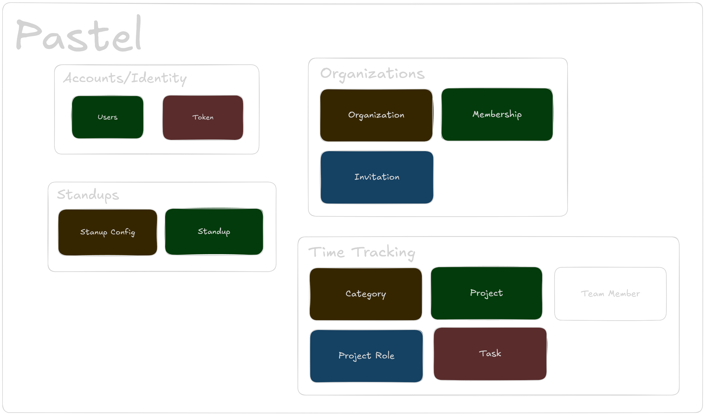

Pastel, and the Magic of Ash framework
"Welcome to functional programming with Elixir and Ash framework!"
Why Rewrite Pastel?
The original Pastel system had limitations in terms of performance, scalability, and maintainability. Rewriting it using the Ash framework allows us to leverage Elixir's strengths and build a more robust and efficient system.
Use DDD to Structure Pastel
Domain-Driven Design (DDD) helps us organize the Pastel system into well-defined contexts and boundaries, making it easier to manage complexity and maintain a clear separation of concerns.

TechStack
- Ash Framework (Elixir-based and Phoenix)
- PostgreSQL
- Rust for SandClock GUI
Why Ash Framework?
- Declarative approach to building APIs and resources
- Built-in support for data validation and transformations
- Enhanced scalability and maintainability for Elixir applications
- Seamless integration with Phoenix and other Elixir libraries
Technical Highlights Pastel
- SASS APP (Software as a Service Application)
- Rewritten in Elixir for better performance
- Improved scalability with Ash framework
- Enhanced testing and debugging capabilities
- Support real-time features like live updates and notifications
- Functional programming style for better code maintainability
What news in SandClock?
- Real-time updates project and category and standup
- Heartbeat mechanism for check status connectivity
- Improved handling edge cases when create tasks
- Rewrite it in Rust (ICED)
How to migrate Old Pastel to New Pastel
- ETL (Extract, Transform, Load) process for migrating data from the old Pastel system to the new Pastel system in runtime
- Zero downtime migration to ensure continuous availability
- User still use the old Pastel system during the migration process
Magic of Ash Framework
defmodule Pastel.TimeTracking.Task do
use Ash.Resource,
otp_app: :pastel,
domain: Pastel.TimeTracking,
data_layer: AshPostgres.DataLayer,
extensions: [AshJsonApi.Resource],
authorizers: [Ash.Policy.Authorizer]
postgres do
table "tasks"
repo Pastel.Repo
end
multitenancy do
strategy :attribute
attribute :organization_id
end
json_api do
type "task"
end
policies do
policy action_type(:read) do
authorize_if {Pastel.Organizations.Checks.ActorHasRole, roles: [:owner, :admin]}
authorize_if expr(exists(category.project.team_members, user_id == ^actor(:id)))
authorize_if expr(user_id == ^actor(:id))
end
policy action_type([:create, :update]) do
authorize_if {Pastel.Organizations.Checks.ActorHasRole, roles: [:owner, :admin]}
authorize_if expr(user_id == ^actor(:id))
end
policy action_type(:destroy) do
authorize_if {Pastel.Organizations.Checks.ActorHasRole, roles: [:owner, :admin]}
authorize_if expr(user_id == ^actor(:id))
end
end
@task_fields [
:name,
:duration_seconds,
:is_overtime,
:approval_status,
:approve_at,
:work_date,
:user_id,
:category_id,
:approved_by_id
]
actions do
defaults [:read]
create :create do
accept @task_fields
change {Pastel.Organizations.Changes.EnsureUserInTenant, field: :user_id}
change {Pastel.TimeTracking.Changes.BroadcastChange,
topic: "tasks", event: "task_changed", action: :created}
validate {Pastel.TimeTracking.Validations.NotFutureDate, []}
end
update :update do
require_atomic? false
accept @task_fields
argument :expected_version, :integer, allow_nil?: false
change {Pastel.Organizations.Changes.EnsureUserInTenant, field: :user_id}
change {Pastel.TimeTracking.Changes.BroadcastChange,
topic: "tasks", event: "task_changed", action: :updated}
change optimistic_lock(:version)
validate {Pastel.TimeTracking.Validations.NotFutureDate, []}
validate {Pastel.TimeTracking.Validations.ExpectedVersion, []}
end
destroy :destroy do
primary? true
change {Pastel.TimeTracking.Changes.BroadcastChange,
topic: "tasks", event: "task_changed", action: :destroyed}
end
end
attributes do
uuid_primary_key :id
attribute :name, :string do
public? true
end
attribute :duration_seconds, :integer do
allow_nil? false
public? true
end
attribute :is_overtime, :boolean do
public? true
end
attribute :approval_status, :string do
public? true
end
attribute :approve_at, :utc_datetime do
public? true
end
attribute :work_date, :date do
allow_nil? false
public? true
default &Date.utc_today/0
end
attribute :version, :integer do
allow_nil? false
public? true
default 1
end
timestamps()
end
relationships do
belongs_to :organization, Pastel.Organizations.Organization do
allow_nil? false
public? true
end
belongs_to :user, Pastel.Accounts.User do
allow_nil? false
public? true
end
belongs_to :category, Pastel.TimeTracking.Category do
allow_nil? false
public? true
end
belongs_to :approved_by, Pastel.Accounts.User do
public? true
end
end
end
API Side
defmodule Pastel.TimeTracking do
use Ash.Domain,
otp_app: :pastel,
extensions: [AshJsonApi.Domain]
json_api do
routes do
base_route "/categories", Pastel.TimeTracking.Category do
get :read
index :read
end
base_route "/projects", Pastel.TimeTracking.Project do
get :read
index :read
end
base_route "/tasks", Pastel.TimeTracking.Task do
get :read
index :read
post :create
patch :update
delete :destroy
end
end
end
resources do
resource Pastel.TimeTracking.Department
resource Pastel.TimeTracking.Project
resource Pastel.TimeTracking.ProjectRole
resource Pastel.TimeTracking.TeamMember
resource Pastel.TimeTracking.Category
resource Pastel.TimeTracking.Task
end
end
Resources
- 3 day for all contexts and conditions
- Claude AI for code assistance 30% weekly (Pastel)
- Codex for code assistance 20% weekly (SandClock)
Demo

Summary
“In Elixir, Ash framework makes building scalable and maintainable applications easier.”
💧 What is Elixir?
- 💥 Not Ruby — but looks a bit like it!
- ⚡ Built for real-time, always-on apps
- 🧠 Runs on the super-reliable BEAM (Erlang VM)
- 🎧 Powers big apps like Discord & WhatsApp
[Elixir] Designed by

José Valim
Benefits of Elixir
- Fault-Tolerant and Resilient Architecture
- Scalability Through the BEAM VM
- Concurrent Programming Made Easy
- Clean and Readable Syntax
- Immutable Data for Safer Code
- Powerful Pattern Matching
- Excellent Tooling and Mix Build System
- First-Class Support for Distributed Systems
- Hot Code Swapping in Production

🧱 What is Fault Tolerance?
🩰 Fault tolerance is like the secret choreography of the K-pop world:
Even if one dancer slips, the show must go on — flawlessly.
🎤 What If a NewJeans Member Slips?
OOP style:
- 🧠 Stop the show, run checks, fix hair, fix shoes
- 😓 Hope nothing else breaks while doing that
- 📉 The audience might get bored or leave
OOP style:
begin
raise "error"
rescue => e
puts "Caught error: #{e}" # Handles error manually
end
Elixir style:
- 💥 Let her fall (aka crash)
- 🧑💼 Supervisor quietly sends in backup (or restarts her!)
- 🎶 The music keeps playing — the crowd never notices!
Elixir’s fault tolerance isn’t panic — it’s performance-ready resilience.
Elixir style:
raise "error it easy?"
🎶 Meet NewJeans = Elixir Processes
- Each member: Hanni, Minji, Danielle, Haerin, Hyein
- Each process performs independently
- If Hanni forgets a move — do we cancel the concert?
No! The performance continues. Just like Elixir processes.
🧑 Meet the Stage Manager = Supervisor
children = [
Supervisor.child_spec({Member, "Haerin"}, id: :haerin),
Supervisor.child_spec({Member, "Minji"}, id: :minji),
# ...
]
Newjeans on STAGE

💥 Oops! Hanni Crashes 😱
NewJeans.Member.crash("Hanni")
💃 "She forgot the dance move…"
- But the Supervisor doesn't panic.
- She calmly restarts Hanni backstage.
- In 0.2s she’s back on stage like nothing happened.
Newjeans on STAGE

🔁 Code That Recovers Like an Idol
test "crashed member is restarted automatically" do
...
Member.crash("Hanni")
Process.sleep(200)
...
end
🛡️ Elixir processes are isolated and supervised,
just like a high-budget concert performance.
Newjeans on STAGE

Demo
Real world application
- Discord
- WhatsApp(Meta)
- Heroku
- PepsiCo
- RabbitMQ(Erlang OTP)

Summary
“In Elixir, crashing is not a bug — it’s a strategy.” 🦸♂️💥